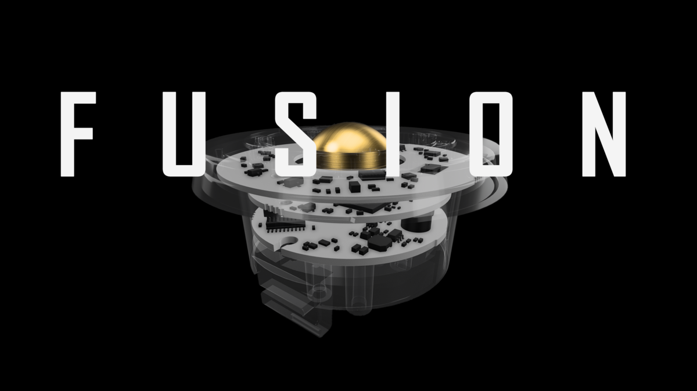
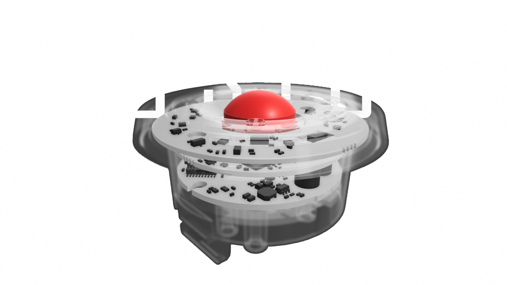
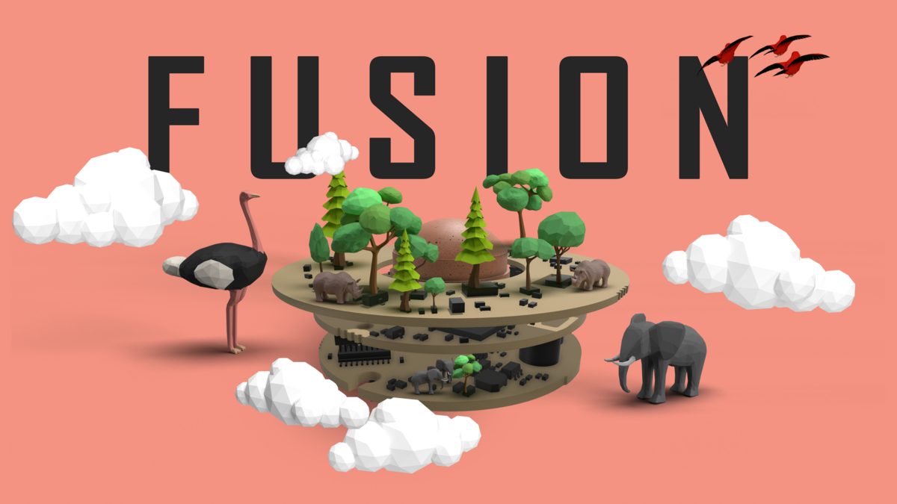
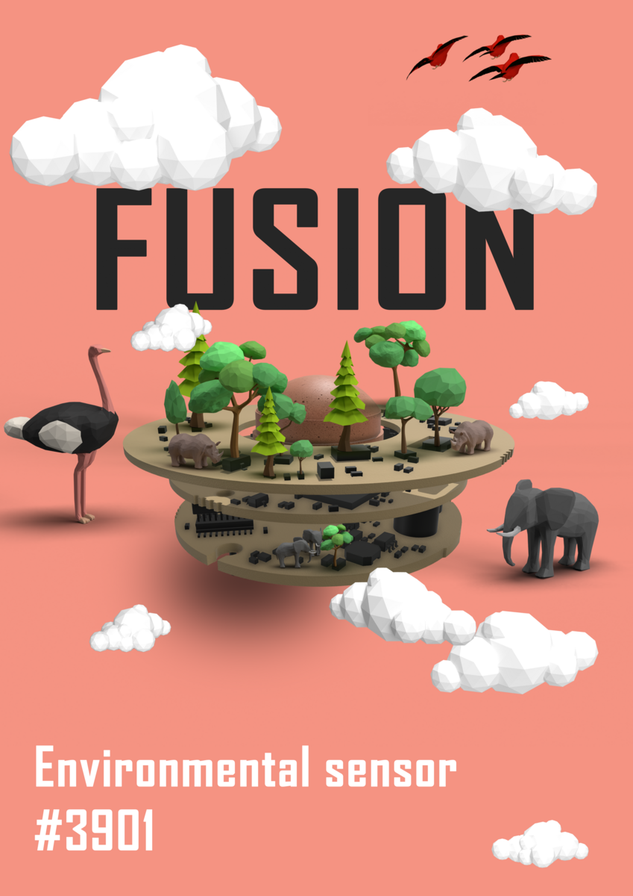

Fusion Sensor

Description
Fusion sensor is a 3 PCB board design for motion and environmental sensing. The design aims to illustrate the engineering complexity of the product in a visually appealing way.
The 3D models of the PCBs and plastic covers were provided as a starting point. Multiple design directions were explored to make the product look "cool" or something that you would want to have in your home, a piece of art rather than a boring white sensor (what it actually is).
Design Variations



Tools
- Shapr3D
- Photoshop